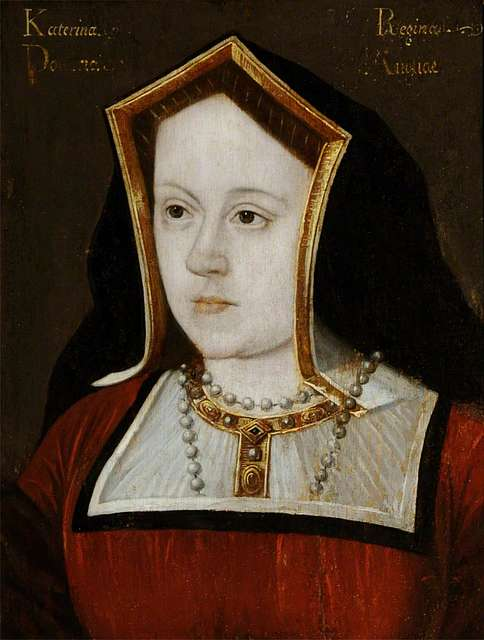
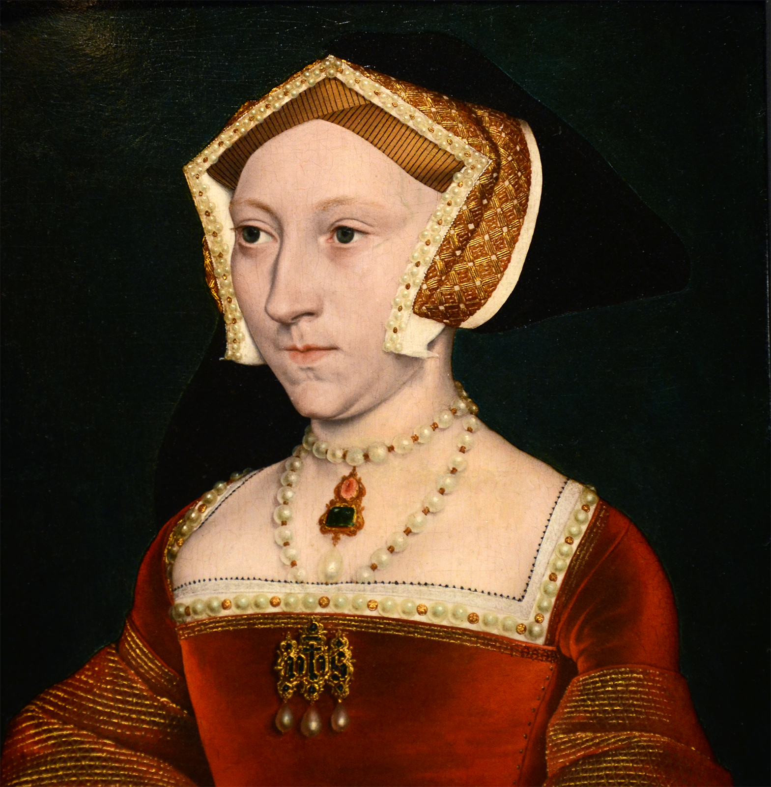
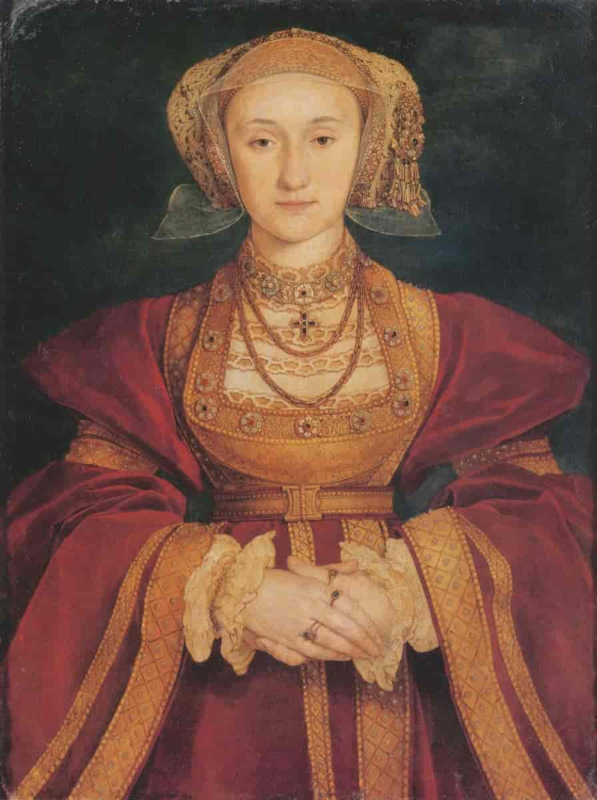
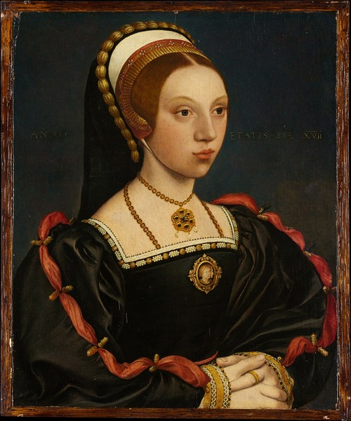
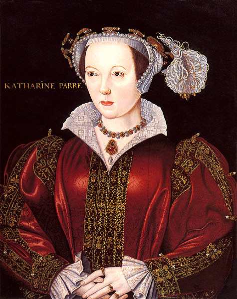

The Wives on Henry VIII
Henry VIII is perhaps most famous for having six wives, and the famous rhyme "Divorced, Beheaded, Died, Divorced, Beheaded, Survived"
Catherine of
Aragon
Catherine of Aragon was Henry VIII's first wife. When she came over from Spain, she married Prince Arthur on the 14th November 1501. Arthur died on the 4th April 1502. Although it was against canon law for a man to marry his brother's wife, the Pope granted an exception as she testified her marriage had never been consumated. Catherine was married to Henry on the 11th June 1509. They had one child, Mary born 18th February 1516. Due to Henry's longing for a son, he eventually annulled his marriage to marry Anne. Catherine was forbidden from seeing Mary again, and died 11th January 1536.
Catherine of Aragon was Henry VIII's first wife. When she came over from Spain, she married Prince Arthur on the 14th November 1501. Arthur died on the 4th April 1502. Although it was against canon law for a man to marry his brother's wife, the Pope granted an exception as she testified her marriage had never been consumated. Catherine was married to Henry on the 11th June 1509. They had one child, Mary born 18th February 1516. Due to Henry's longing for a son, he eventually annulled his marriage to marry Anne. Catherine was forbidden from seeing Mary again, and died 11th January 1536.
Jane Seymour
Similar to Anne, Jane's date of birth isn't known. Jane had been a maid-of-honour to Anne, before Henry took an interest in her. Anne was executed on the 19th June 1536, Henry married Jane on the 30th June 1536. She was able to reconcile Henry to his oldest daughter, Mary. On 12th October 1537, Jane gave birth to Edward's only legitimate son, Edward. However, she died on the 24th October 1537. Henry did not marry again for two years, and when he died he was buried next to her.
Similar to Anne, Jane's date of birth isn't known. Jane had been a maid-of-honour to Anne, before Henry took an interest in her. Anne was executed on the 19th June 1536, Henry married Jane on the 30th June 1536. She was able to reconcile Henry to his oldest daughter, Mary. On 12th October 1537, Jane gave birth to Edward's only legitimate son, Edward. However, she died on the 24th October 1537. Henry did not marry again for two years, and when he died he was buried next to her.
Anne of Cleeves
Anne was born in 1515, however little is known of her life before she married Henry other then that she'd had a failed bethoral. Hans Holnein had been dispatched to paint, and Anne was selected as believed to be docile. They were married 6th January 1540, although Henry was not taken with her and the marriage was never consumated. Their marriage was annulled on the 12th July 1540. After the annulment, she became known as the King's Beloved Sister, and given palances as she had not fought the annulment. She died in 6th July 1557, the last of Henry's wives to die.
Anne was born in 1515, however little is known of her life before she married Henry other then that she'd had a failed bethoral. Hans Holnein had been dispatched to paint, and Anne was selected as believed to be docile. They were married 6th January 1540, although Henry was not taken with her and the marriage was never consumated. Their marriage was annulled on the 12th July 1540. After the annulment, she became known as the King's Beloved Sister, and given palances as she had not fought the annulment. She died in 6th July 1557, the last of Henry's wives to die.
Kathryn Howard
Born in 1523, Kathryn had a difficult start in life due to her family's lack of fortune. She was sent to live in a Duchess's home, before becoming a lady-in-waiting to Anne of Cleeves. Henry eventually took interest, and they were married 28th July 1540, the same day that Cromwell was executed. On 1st November 1541, Henry recieved a letter about her alleged infeldelity. Catherine confessed that Francis Dereham had raped her, and because of this was stripped of her title. Dereham, and another of the alleged men Thomas Culpeper were executed 1st December 1541. She was executed 13th February 1542, she was nineteen years old.
Born in 1523, Kathryn had a difficult start in life due to her family's lack of fortune. She was sent to live in a Duchess's home, before becoming a lady-in-waiting to Anne of Cleeves. Henry eventually took interest, and they were married 28th July 1540, the same day that Cromwell was executed. On 1st November 1541, Henry recieved a letter about her alleged infeldelity. Catherine confessed that Francis Dereham had raped her, and because of this was stripped of her title. Dereham, and another of the alleged men Thomas Culpeper were executed 1st December 1541. She was executed 13th February 1542, she was nineteen years old.
Catherine Parr
Born in 1512, unlike Henry's other wives, Catherine had been married twice before. It is likely she would have married Jane's brother Thomas, however instead she had caught the eye of the King, and they were married 12th July 1543. She was the first Queen of England to also be Queen of Ireland. Henry died 28th January 1547. After Henry's death, she married Thomas Seymour, however died 5th September 1548 after giving birth to their only child. Thomas was beheaded 20th March 1549.
Born in 1512, unlike Henry's other wives, Catherine had been married twice before. It is likely she would have married Jane's brother Thomas, however instead she had caught the eye of the King, and they were married 12th July 1543. She was the first Queen of England to also be Queen of Ireland. Henry died 28th January 1547. After Henry's death, she married Thomas Seymour, however died 5th September 1548 after giving birth to their only child. Thomas was beheaded 20th March 1549.